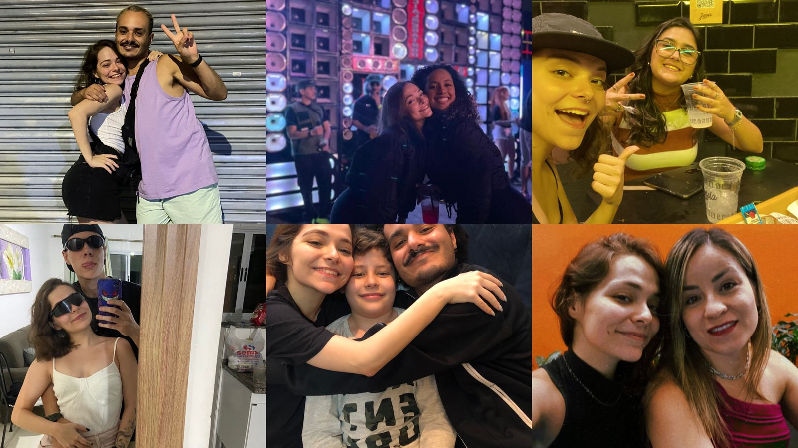
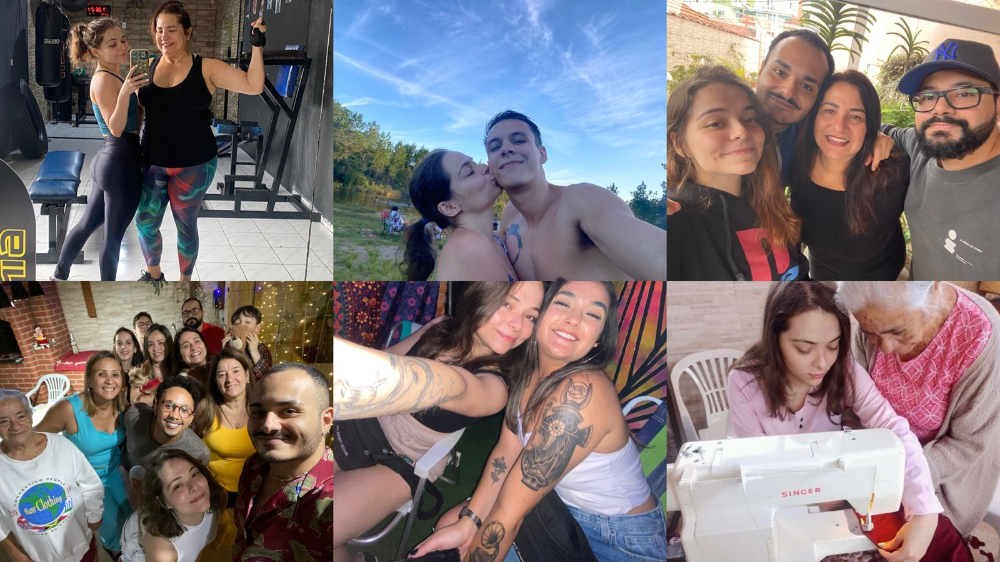

♡⊹˚₊ Parte de mim ₊˚⊹♡


felicidade é bem maior quando compartilhada ヽ(≧◡≦)八(o^ ^o)ノ
as pessoas que preenchem meus dias me fazem mais feliz! é impossivel descrever cada uma delas em apenas um texto, mas sou grata por cada uma delas terem deixado um pouco delas em mim também. tenho muito em comum com as pessoas da minha família, mesmo tendo certas divergências, no fundo sempre teremos algo que irá nos unir. obrigada por terem me ensinado tanto. obrigada por todas as trocas, carinho, amor, agradeço até pelos puxões de orelha, que sei que tem o intuito de sempre me fazer uma pessoa melhor. sou feliz por compartilhar minha vida com vocês.